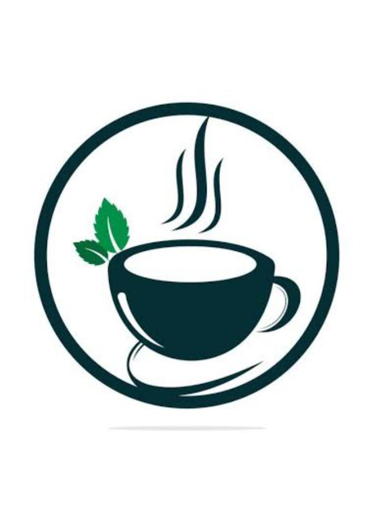

-
Chá de camomila
O chá de camomila é um chá medicinal popularmente conhecido por sua função calmante.
R$ 5,25
-
Chá de hortelã
O chá de hortelã é utilizado para tratar cólica menstrual, resfriado, síndrome do intestino irritável e refluxo.
R$ 5,50
-
Chá de erva-cidreira
A erva-cidreira é uma planta com propriedades medicinais que pode acalmar, melhorar a digestão, controlar a pressão, aliviar a dor de cabeça e combater a insônia e a perda de apetite.
R$ 5,25
-
Chá de gengibre
O chá de gengibre é um dos chás medicinais que combatem doenças. Ele pode melhorar o controle de açúcar no sangue e aumentar a sensação de saciedade, por isso, também pode ajudar no emagrecimento.
R$ 5,75
-
Chá de hibisco
O chá de hibisco é conhecido por auxiliar no emagrecimento, mas ele também oferece diversos outros benefícios. Ele reduz os sintomas de depressão e ansiedade, por possuir diversas vitaminas e minerais, relaxando a mente e o corpo.
R$ 5,25
-
Chá de equinácea
O chá de equinácea é um dos chás medicinais bastante utilizado para reduzir resfriados. Um estudo concluiu que a equinácea pode ajudar a impulsionar o sistema imunológico, ajudando o corpo a combater vírus e infecções.
R$ 5,25
-
Chá de maracujá
As folhas, caules e flores da planta passiflora são usados para fazer chá de maracujá, que costuma ser utilizado para aliviar a ansiedade.
R$ 5,25
-
Chá de sálvia
A Salvia officinalis é uma planta usada para o tratamento de convulsões, úlceras, gota, reumatismo, inflamação, tontura, tremores, paralisia, diarreia e hiperglicemia.
R$ 5,25